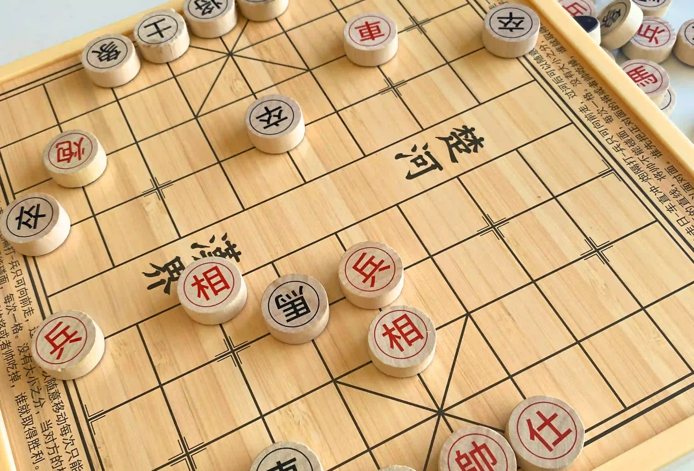

I’m sitting by the living room table, sticking tiny magnets to the bottom of Go pieces for a checkerboard game we recently bought. I have always loved tedious little tasks. Anything that is finicky and repetitive feels like it scratches my brain in the best way possible. The apartment is still quiet, its early Friday morning and I can hear my brother faintly snoring in his room. The sun seems to set earlier and earlier, but luckily we have gotten very clear late autumn days.
“I could play some music while I do this mundane task.” Maybe “could” isn’t exactly the right word to describe the feeling that popped into my head. I “ought to”, I “must”? I “should”. Because it feels obvious, doesn’t it? I remember being thirteen falling asleep to screamo blasting my eardrums through my headphones. I listen to music while tidying the house, washing my hair, reading before sleep and even as I write this.
I recently heard somewhere that when they invented the gramophone people kind of freaked out. Saying “Imagine! Walking into a room and finding someone sitting there, by themselves, listening to music! They won’t want to do anything else”. Music is, by the definition of the medium, a communal thing – at least until very recently.
The privatization of experience
I recently read “Bodies and mobile media”, a fascinating book that objectively explains how smartphones impact our different senses. It explains how, unlike sight, sound and smell cannot be shut away from our perception. Thus, in attempt to alter our soundscapes, a commuter in the subway may use headphones to modulate their experience. Creating a cocoon of a private listening experience, altering their mood and overall commute. Before the invention of the gramophone, music was something we could only hear live. Music was played by your uncle in the living room, or the family would go to a public house to gather around musicians. With tapes and CDs, it was the process of sharing music that brought us together, meeting friends every week to exchange CDs. With streaming (and dreaded autoplay on Spotify) the selection of genres might seem more diverse than ever, but ironically, we end up locked into safe choices made by the algorithm. If you don’t like a song, you skip it. If your friend recommended you an album, you may give it a few tries, mostly due the smaller selection of CDs you own.
This meme keeps me going through the cold late-autumn.
Even then, the additional barrier of changing CDs or bringing your music player from your room to your kitchen, introduced moments of silence during tedious tasks, which may be filled with humming to yourself. The accessibility to incredibly talented musicians has built a moat around the amateur. Why listen to my own terrible voice when Leonard Cohen or the Beatles have a much more soothing effect? However, there is something intimate about it, boredom bringing about creativity. We had a CD player at home growing up, yet my childhood was filled with me singing while playing by myself, only using the CDs when making up dances with my sister.
Being unproductive
Goodreads, Musicboard, Letterboxd and other “to consume media” social apps, have turned pastimes into hobbies to be tracked and ranked. My list of “albums to listen to” induces guilt when I read in silence or tune into the radio while doing dishes. Recently, online discourse has been plagued with articles about hobbies. “Hobbies to make you smarter” “Hobbies you can monetize”. With the monetary avenues of content creation, any hobby can be captured and sold into platforms. As a formal thousands-of-hobbies person, I am not opposed to hobbies themselves. But I wonder whatever happened to pastimes? Making a puzzle, playing chess, doing a sudoku. Even coloring in is sold as this meditative hobby. If you want to improve your drawing skills, you must stay consistent, challenge yourself through Inktober or other online challenges, and share your progress.
My latest pastime has been playing chinese chess with my brother.
The truth is, pastimes aren’t hobbies. You need to give yourself time to be unproductive. If not for your sake, for others. Hobbies are private experiences where you improve your craft and skills – which can be incredibly rewarding and have a place too. But you won’t always have the energy to play guitar or do an oil painting, and as we spend more time indoors with family and friends, playing cards or making decorations for the house can bring us together.
Photo from a recent trip to Japan.
And hey, it’s okay to just pass the time. That is literally all we can do, living is passing time, whatever you choose to do, you are passing time. Not everything is a highlight. Living is what happens in line at a coffee shop and writing stupid four-line poems you can tell your friends.
E.g.,
Workout clothes with the tags still on,
The salad we got last week went off,
Every day, a reminder of all I am not,
Life is a series of cruel metaphors.
So what’s next for me this week?
- I’ve been sitting in my living room and doing nothing. Enjoying the passing of time, feeling grateful I have the safety and space to afford this. I will also do nothing but listen to music, by myself in a room – like some sort of freak!.
- I’m also re-discovering non-productive pastimes, playing cards and chess, and going for walks without a “step goal”. Good luck, and embrace staying indoors during winter to connect with those around you.
Thank you for reading this assorted collection of my thoughts over the past week. Take care, stay warm and enjoy being unproductive
Lots of love,
Mia.